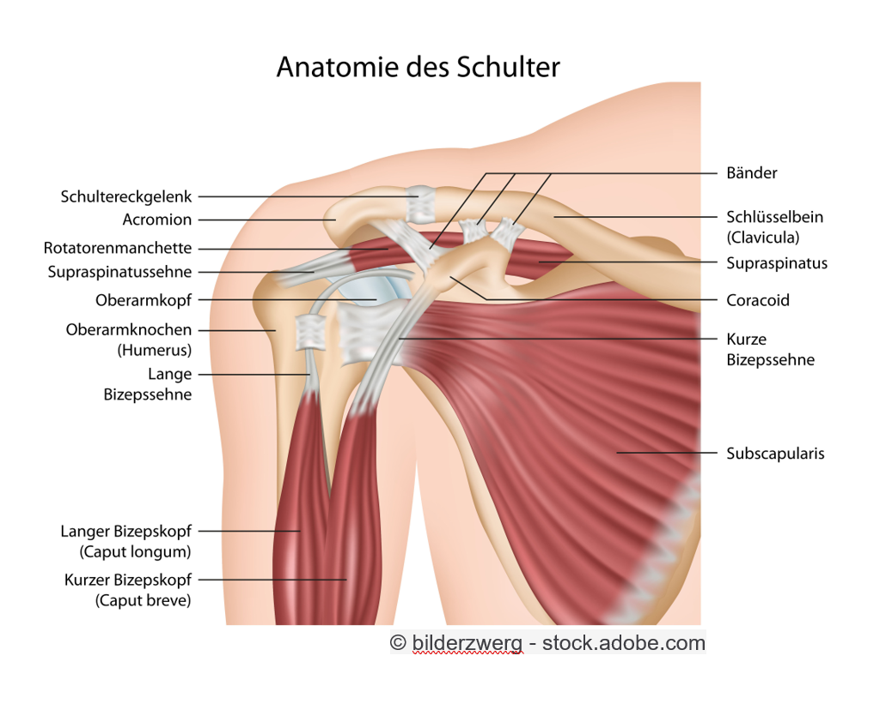

Die Schulter ist aus drei Gelenken aufgebaut. Sie besteht aus dem Schulterhauptgelenk, welches das Schulterblatt mit dem Oberarm verbindet, dem Schultereckgelenk, welches das Schultereck (Acromion) mit dem Schlüsselbein verbindet und dem Sternoclviculargelenk, welches das Brustbein und das Schlüsselbein verbindet. Das Schultergelenk ist das beweglichste Gelenk im menschlichen Körper. Vier Muskeln sorgen dafür, dass der Oberarmkopf in der Gelenkpfanne bleibt, welche im Vergleich zum Hüftgelenk sehr flach ist. Diese vier Muskeln nennt man auch Rotatoren-Manschette. Die Rotatoren-Manschette ist ringförmig um den Oberarmknochen angeordnet und verbindet den Oberarm mit dem Schulterblatt. Zum Schultergelenk gehören verschiedene Bänder und Schleimbeutel. Die Bänder verbinden das Schlüsselbein, das Schulterblatt und der Oberarmknochen miteinander und die Schleimbeutel verringern die Reibung zwischen den Muskeln, Sehnen und Knochen. Über dem Schultergelenk liegt der Deltamuskel.

Eine häufige Verletzung der Schulter im Volleyball ist eine sogenannte muskuläre Dysbalance. Das bedeutet, dass verschiedene Muskeln verschieden stark, bzw. schwach sind. In der Schulter wird die vordere und die obere Muskulatur oft beansprucht, während die hintere Muskulatur meist viel schwächer ist. Diese wird im Vergleich zur vorderen und der oberen Muskulatur im Alltag nicht regelmässig gebraucht. Wenn sich dann die Sehnen am Ansatz der Rotatorenmanschette und der Schleimbeutel unter dem Schulterdach entzünden, spricht man vom Impingement-Syndrom. Bei fortgeschrittenem Syndrom kann es durch Kalkablagerungen am Ansatz der Rotatorenmanschette zu Kraftverlust und Bewegungseinschränkungen führen.
Stürze oder sonstige Gewalteinwirkungen auf die Schulter können zu einer Instabilität führen. Manchmal reicht auch einfach eine muskuläre Schwäche.
Das Suprascapularis-Syndrom auch genannt Volleyballschulter ist eine volleyballspezifische Verletzung, die durch den Flatterballservice verursacht wird. Durch die extreme Rück- und Vorwärtsdrehung kann eine Überlastung des Suprascapularis Nerves entstehen. Dies führt zu anhaltenden, tiefen und dumpfen Schmerzen im Schulterbereich und später zu einem Abbau der Schultermuskulatur und der Schulterfunktion.
Behandelt wird das Suprascapularis-Syndrom erst durch Vermeidung der Überkopfbewegung, eventuellen physiotherapeutischen Massnahmen und einer gezielten Verbesserung der Schulterbeweglichkeit und der Kräftigung der Schultermuskulatur.
Eine muskuläre Instabilität wird durch einen gezielten Muskelaufbau behandelt.
Das Impingement-Syndrom wird mit entzündungshemmenden Spritzen und Ruhe bekämpft.